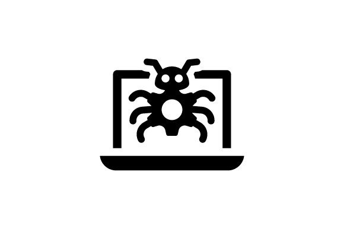

Project Gallery

Malware Development
I have developed a strong foundation in reverse engineering and malware analysis, focusing on understanding software behavior,
identifying vulnerabilities, and studying techniques used in cybersecurity threats. This research helped me have a deeper understanding of AMSI and how anti-virus scanners and software works.
View on GitHub

Home Lab
I designed and implemented a dedicated home lab environment, utilizing two servers and a cisco netowork switch to simulate real-world scenarios and enhance my technical expertise.
This setup has allowed me to experiment with various technologies, such as: Prox mox, Docker, Kubernetes, SQL, and Network configuration with YARA rules.
I then practice advanced system administration, and learned new skills in a hands-on environment.
University of Michigan Cybersecurity Bootcamp
I had the opportunity to participate in a cybersecurity Bootcamp hosted by the University of Michigan at the age of 15.
This early experience sparked my interest in cybersecurity and provided a foundational understanding of key concepts and practical skills in the field.
Hack5 USB Ruber Ducky
At the age of 17, I purchased a Hak5 USB Rubber Ducky to enhance my understanding of penetration testing, reverse shells, and scripting.
Through hands-on experimentation with the device, I developed a deep appreciation for keystroke injection attacks and automation techniques,
further expanding my interest in cybersecurity, ethical hacking, and system vulnerabilities.
Cloudflare Domain Configuration
While developing this website, I gained hands-on experience with DNS and subdomain configuration.
Additionally, I explored Cloudflare Tunneling, enabling secure remote access to my servers without the need for port forwarding.
Extro Ace certification
While attending Lewis University, I completed a course in Digital Forensics, where I gained hands-on experience in forensic analysis, and evidence handling.
Upon completing the course, I earned the ACE certification.

Gitbook Documation
Throughout my cybersecurity learning journey, I developed a GitBook site to document my research, notes, and findings.
This project is particularly meaningful to me, as it reflects the time, effort, and dedication I put into learning.
View Site
AlFA Network Card
I acquired an ALFA networking card to explore Wi-Fi security and network vulnerabilities.
Utilizing tools such as Aircrack-ng, Wireshark, and Ettercap, I gained practical experience in network analysis, packet sniffing, and wireless penetration testing.
The use of this helped to deepen my knowledge of Wireless communications and network variabilities.

FlareVM
While studying malware analysis and virus detection, I utilized FLARE to establish a reverse engineering environment within my home lab.
This hands-on experience allowed me to work with tools such as PE Studio, Binary Ninja, and Ghidra, this helped me enhanc my proficiency in static and dynamic malware analysis.
Additionally, I explored Intrusion Prevention Systems and Intrusion Detection systems, configuring them with YARA rules to improve threat detection.
Critical Infristucuctre lab
While at Lewis University, I participated in a Critical Infristucuctre lab, hosted by the university.
This research helped me to understand some of the real-world threats, and learn more about critical infrastructure in the cyber world.
TryHackMe
While attending high school and college full-time, I actively developed my cybersecurity skills through platforms like TryHackMe.
This hands-on training allowed me to deepen my understanding of cybersecurity concepts, tools, and techniques.
View Profile